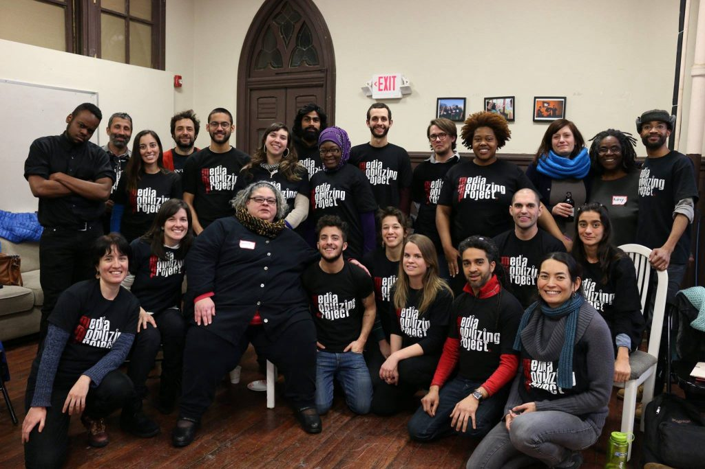
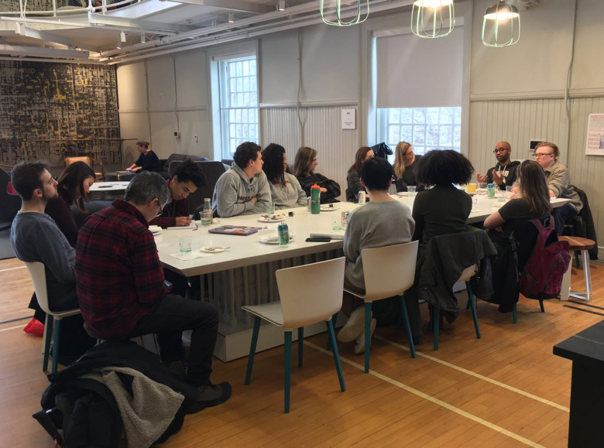
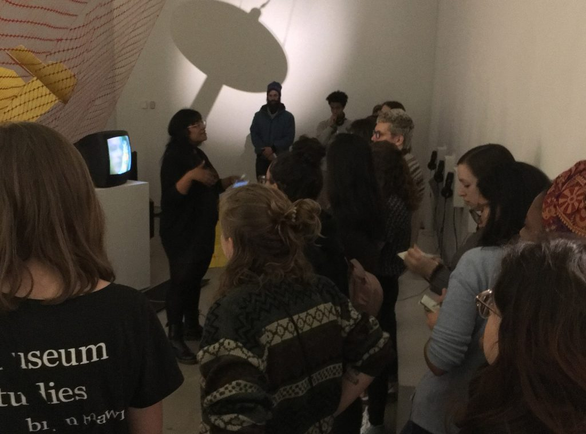
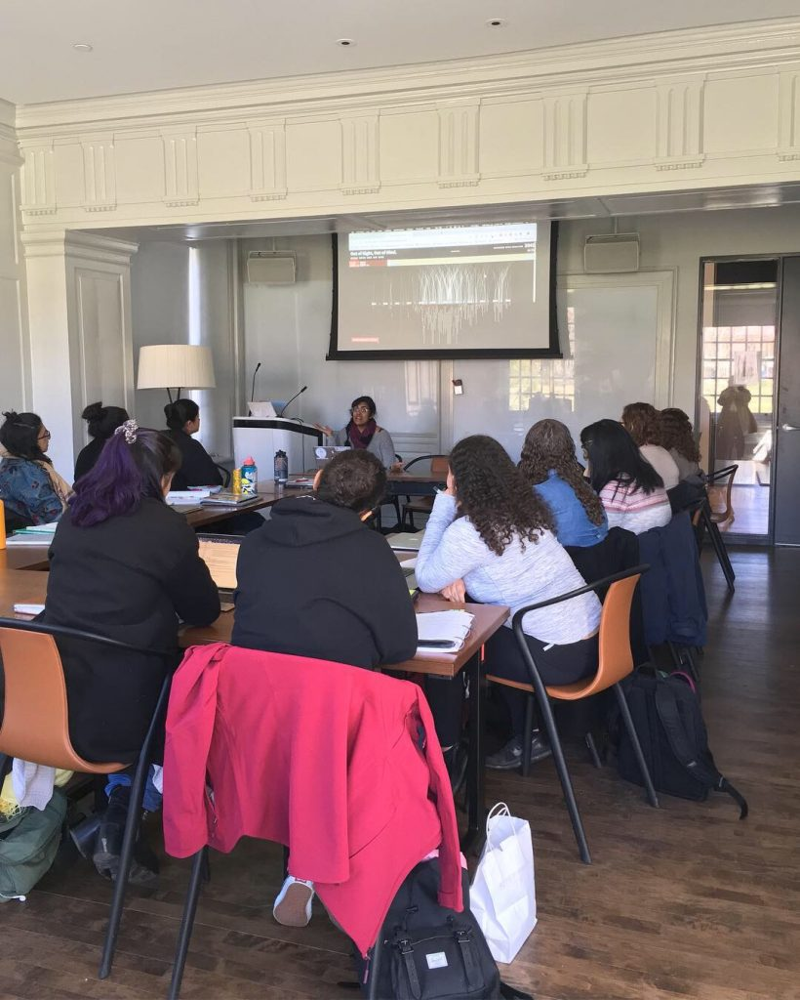
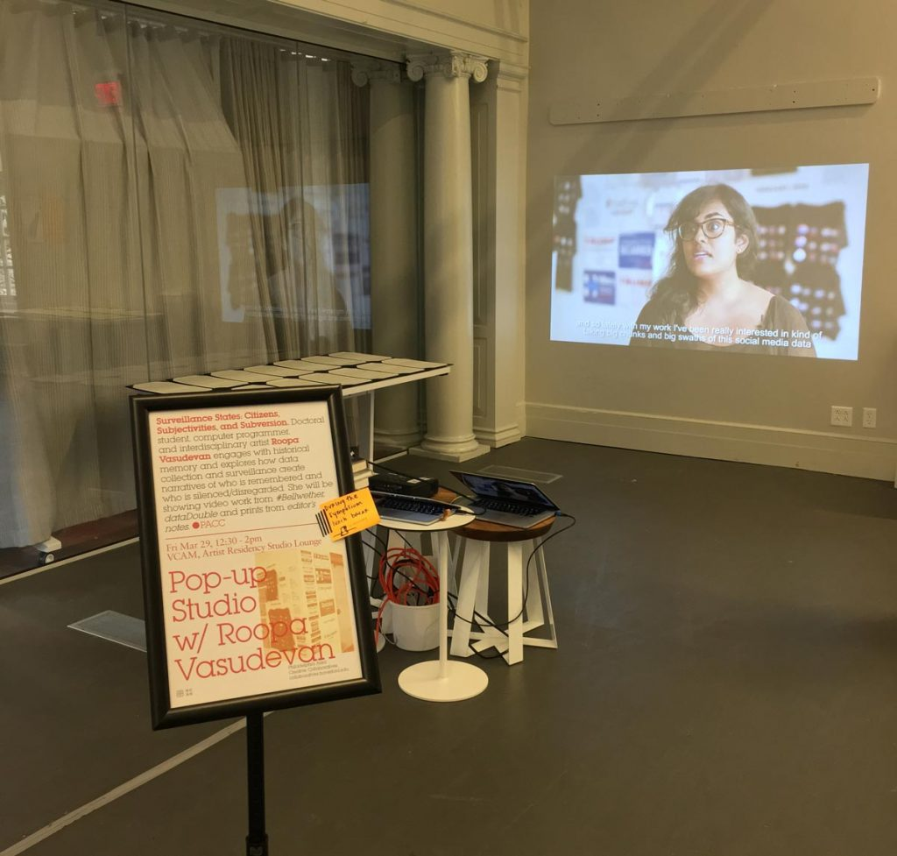

Spring2019
Introduction
This collaborative endeavor brings together faculty and students in Comparative Literature, Visual Studies, and Health Studies, digital artist Roopa Vasudevan, and the Philadelphia-based non-profit Media Mobilizing Project to think about, with, through, and against surveillance. How do technologies of surveillance and data collection, visualization, and representation aim to produce new subjectivities and particular kinds of citizens? How do repressive forms of state surveillance converge with the biopolitical projects of demographic and health research? What practices do these ways of seeing share, and what disciplinary and normativizing effects do they have? ‘Surveillance States: Citizens, Subjectivities, and Subversion’ invites participants and the broader community to think critically about apparently innocuous survey methods and state surveillance practices in the same frame. By exploring how individuals and groups subjected to surveillance engage in acts of subversion, appropriation, or resistance, our shared conversations and creative work will engage public debates about surveillance, privacy, dignity, and the boundaries of the state.
Collaborators
Lead Artist
Roopa Vasudevan is an interdisciplinary artist, computer programmer and scholar, currently based in Philadelphia. Her work concerns the reading of data as a form of collective memory, how surveillance and data collection are altering our notions of what archives are and who is remembered, and coming up with more creative and ethical practices for data culture. She has exhibited internationally in Belgium, China and the United States, and been featured on Reuters, Slate, Hyperallergic, Jezebel, Complex, PSFK, the FADER, PBS NewsHour, Public Radio International, and more, as well as on American, French and German television. Recently, she has been a participant in the SOHO20 Residency Lab (Brooklyn, NY); the Arctic Circle Residency (Svalbard); China Residencies’ #slowtrain digital residency (Trans-Siberian Railway); the SPACES World Artists Program (Cleveland, OH); and the Flux Factory artist collective (Queens, NY).Roopa received an MPS from NYU’s Interactive Telecommunications Program in 2013. Between 2016 and 2018, she was an Assistant Arts Professor of Interactive Media Arts at NYU Shanghai. She is currently pursuing her PhD at the Annenberg School for Communication at the University of Pennsylvania.
Executive Director
Media Mobilizing Project (now the Movement Alliance Project)
Bryan, a long-time staff member of Media Mobilizing Project, has served as Executive Director since 2013. He has led a number of major programs areas, including a collaboration with nearly two-dozen partner organizations to create Keyspots, a city-wide digital literacy program to broaden internet access. Bryan is committed to using strategic media and communications to strengthen and connect communities organizing for their human rights, and he frequently leads trainings and workshops to share practices for media in organizing. Bryan also works on state and national media policy advocacy, and serves as a board member of the Center for Media Justice, which is committed to a ground-up approach to securing media rights and access. Bryan received his bachelor’s degree from Columbia University in Anthropology and Comparative Ethnic Studies.
Visiting Assistant Professor of Comparative Literature
Haverford College
Dr. Aniko Szucs is a Mellon Fellow and Visiting Assistant Professor in Comparative Literature at Haverford College. She holds a Ph.D. in performance studies from New York University, and two M.A.’s in English and in Communication from ELTE University of Budapest, as well as an M.F.A. in theatre studies and dramaturgy from the University of Theatre, Film, and Television, also in Budapest. She is a New York and Philadelphia based dramaturg and scholar, who has published articles on Central Eastern European theatre, the politics of memory, and recontextualized state security documents in contemporary performance, in both English and Hungarian.
Assistant Professor of Health Studies
Haverford College
Anna West is a political and medical anthropologist whose work focuses on global health, local politics, and the possibilities for engaged postcolonial citizenship in southern Africa. Her dissertation research in Malawi combined ethnographic and archival work to locate contemporary rural health promotion paradigms in sedimented landscapes of intervention dating to the colonial period. At Haverford, she is an Assistant Professor of Health Studies and coordinator of the interdisciplinary Health Studies minor. Her courses encourage students to engage critically with the structural determinants of health inequities, the historicity of intervention, and the social construction of knowledge in medicine and public health. Prior to joining the faculty, Anna earned her doctorate in Anthropology at Stanford and a master’s in International Health at Johns Hopkins.
Events
Media Mobilizing Project (now the Movement Alliance Project): Bryan Mercer, Executive Director
Non-Profit Partner
1.22~
924 Cherry Street, Philadelphia

Before we became Movement Alliance Project, we were Media Mobilizing Project.
Many of Media Mobilizing Project’s founders came out of the welfare and homeless people’s organizing of the 1990s. Guided by Dr. Martin Luther King Jr. and the Poor People’s Campaign 40 years earlier, it was clear to MMP founders that nothing less than “a radical revolution of values” could bring about the change we would need.
Media Mobilizing Project was founded in 2005, when online video and social media were in their infancy. Inspired by the Zapatistas – a movement that organizes for justice for rural peasants in southern Mexico – and their call for an independent media, Media Mobilizing Project founders participated in the development of the Global Indymedia Network, building our own media in the hope of connecting mass social movements.
In those early years, our work was defined by organizing campaigns to stop gentrification and displacement win improved working conditions for service workers, gain citizenship for undocumented immigrants and obtain quality public schools for all. With a video camera in hand and a vision in heart, Media Mobilizing Project organized as both an intervention into the incomplete stories told about our communities and an invitation to build a network of community organizations working toward a shared vision of a more just world for us all.
Because “movements begin with the telling of untold stories”, Media Mobilizing Project documented and shared stories to connect movement leaders from organizations and communities across Philadelphia and beyond. MMP also trained those most impacted by our society’s failings to create their own media about their lives and struggles for justice.
Read lessRoopa Vasudevan, Lead Artist
Artist in Residence
1.22~
Roopa Vasudevan lives in Philadelphia and is currently a PHD Candidate at The University of Pennsylvania, she will be on campus throughout the Spring 2019 semester. The video documentation above is from HANDS UP, a collaborative project with Atif Ateeq.
The installation is meant to be experienced alone. one at a time, a viewer walks behind a curtain into a room containing a large wall of flashing red and blue lights. they hear the sounds of sirens and the voices of police telling them to put their hands up. once they comply and their hands are in the air, a gunshot is heard, several blinding strobe flashes are triggered, and the noises disappear. the viewer is shaken by the sudden light and noise, and left in a chilling void of silence as they exit the space.
HANDS UP simulates the experience of being approached by the police in a heated, confrontational manner. similar interactions have resulted in the shooting deaths or brutal attacks of unarmed minorities throughout the united states, which have been increasingly covered by the mainstream media in recent years, and each of which has since contributed to the ongoing debate about the state of race relations in america. the piece directly places visitors in the chaotic and overwhelming moments before such an incident occurs, and invites viewers to contemplate being faced in such a way in the real world.
Read lessTechnologies of Surveillance Through the Lens of the Artist Course Visit w/ Roopa Vasudevan, Lead Artist
Course Visit
2.6
1:30-4:00pm, Haverford College, VCAM 102

Roopa Vasudevan shares her artistic practice focusing on issues of human identity and agency in the digital era, power relationships and how they manifest through technology and coming up with more creative and ethical practices for tech-based art and design.
Read lessLunch w/ Media Mobilizing Project, Bryan Mercer & Helyx Chase
Discussion
2.13
1-2:30pm, Haverford College, VCAM Community Kitchen

Executive Director Bryan Mercer and Helyx Chase from Media Mobilizing Project led a discussion with students from Aniko Scuzs’ course ‘Technologies of Surveillance Through the Lens of the Artist: A Historical Overview’ about grassroots organizing through media, ‘the telling of untold stories,’ and how these methods shape policy reform over a casual lunch in VCAM.
Read lessTechnologies of Surveillance Through the Lens of the Artist: A Historical Overview Course Visit w/ Media Mobilizing Project, Nonprofit Organization
Course Visit
2.13
1:30-4:00pm, Haverford College, VCAM 102

Executive Director of the Media Mobilizing Project (now the Movement Alliance Project), Bryan Mercer, visited Aniko Szucs’s course “Technologies of Surveillance Through the Lens of the Artist: A Historical Overview”. Mercer engaged the students in a discussion about MMP’s goals and motivations, community involvement and empowerment, and how these ideas connect with the larger collaborative PACC project.
Read lessICA Tour: Focus on Surveillance, w/ Roopa Vasudevan, Lead Artist
Tour & Talk
2.23
11:30-12:30pm, Institute of Contemporary Art, 118 S 36th St, Philadelphia

Artist Roopa Vasudevan will host a discussion at the Institute for Contemporary Art (ICA) on themes of surveillance, knowledge collection, and representation, found in the three exhibitions currently on view “Introducing Tony Conrad: A Retrospective“, “Colored People Time: Mundane Futures“, and “Cecilia Vicuña: About To Happen“. This event is free and open to the public.
Read lessCritical Data Literacy for Global Health Course visit w/ Roopa Vasudevan, Lead Artist
Course Visit
3.26
1:30-4:00pm, Haverford College, VCAM 102

Lead artist Roopa Vasudevan visited professor Anna West’s course, “Critical Data Literacy for Global Health”. In her visit, Vasudevan shared her artistic practice focusing on issues of human identity and agency in the digital era, power relationships and how they manifest through technology, and how to come up with more creative and ethical practices for tech-based art and design.
Vasudevan also created a special presentation for the students about infographics and their role in the illustration of data, both from a scientific side, but more specifically, from an artistic perspective: how artists are rendering and interpreting data for creative purposes. The presentation included examples of artists working in this relatively new media and examined their videos and websites, and touched on their creative processes collecting data, analyzing it, and transforming it.
Read lessPop-Up Studio with Roopa Vasudevan
Pop-Up Exhibition
3.29
12:30-2:00pm, Haverford College, VCAM Artist Residency Studio Lounge

Doctoral student, computer programmer, and interdisciplinary artist Roopa Vasudevan engages with historical memory and explores how data collection and surveillance create narratives of who is remembered and who is silenced/disregarded. She will be showing video work from #Bellwether, dataDouble and prints from editor’s notes.
Read lessCritical Data Literacy for Global Health Course Visit w/ Media Mobilizing Project, Nonprofit Organization
Course Visit
4.23
1:30-4:00pm, Haverford College, VCAM 102
Executive Director, Bryan Mercer, visited professor Anna West’s course, “Critical Data Literacy for Global Health”, and shared the work of Media Mobilizing Project. He engaged the students in a discussion about the MMP’s mission to amplify the voices of communities fighting for justice, equity and human rights, and how these ideas connect with the larger collaborative PACC project.Â
Read lessArchive